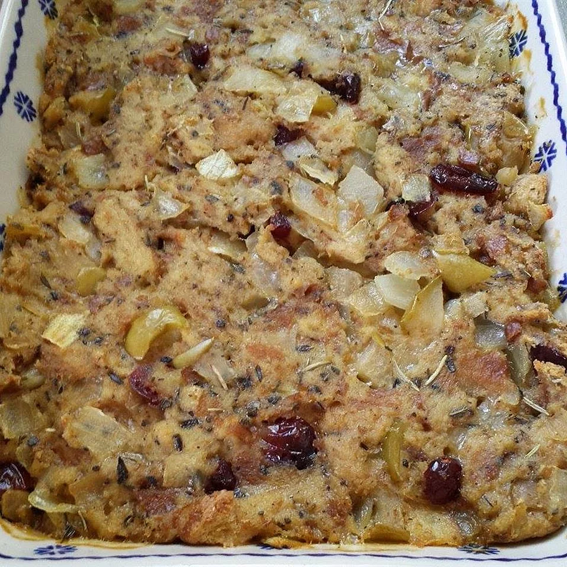

Really Easy Bread Stuffing

Delicious and super simple to make! This is the stuffing to make if you're looking for simplicity in your stuffing. You can use either fresh or stale bread in this recipe.
Servings: 5
Yield: 5-7
Ingredients
- 1 (1 pound) loaf white bread
- 1 small onion, chopped
- 1 teaspoon poultry seasoning
- 1 pinch salt
- 1 pinch ground black pepper
- ¼ cup water
Steps
- Moisten all the bread with as much water as is needed to make moist. Add the onion, seasoning, and salt and pepper. Mix with hands.
- Place in turkey or in foil and wrap up (which I do) and cook for at least 1 hour, longer if you are cooking it in the turkey. May open the foil for last 15 minutes to make top crusty.